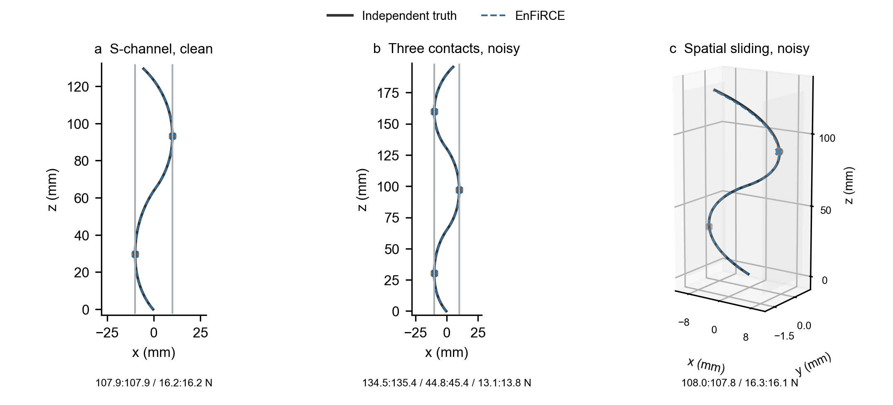
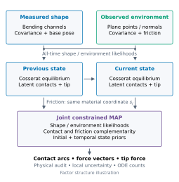
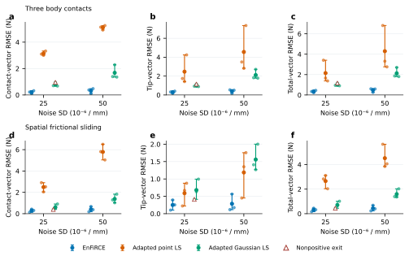
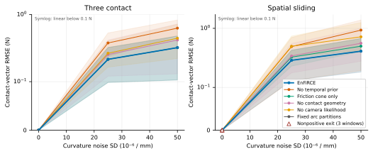
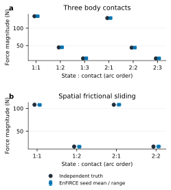
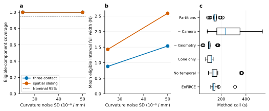
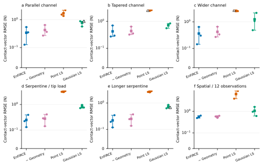
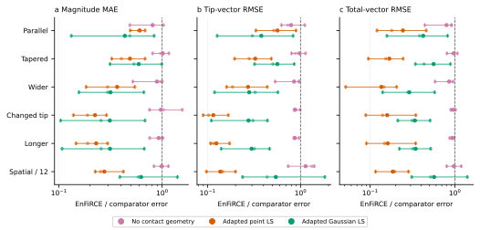
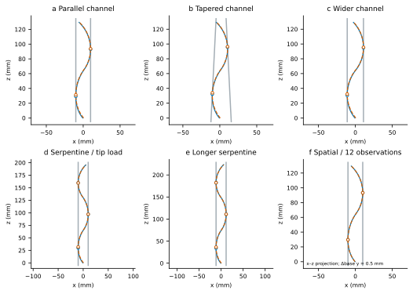
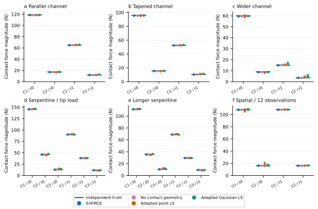

Observe
Two measured bending channels, calibrated rod mechanics, base poses, and plane observations with uncertainty. Unmeasured torsion is predicted by mechanics.
Environment- and Friction-informed Rod Contact Estimation
Estimate where a flexible rod touches its surroundings, how hard each contact pushes, and how much force remains at the tip.
Sparse bending measurements meet uncertain surface geometry and friction history in a joint nonlinear mechanics model.

Several different forces can bend a rod into similar shapes. EnFiRCE adds what the environment allows: nonpenetration, surface tangency, normal reaction, and friction evaluated using the preceding equilibrium.
Two measured bending channels, calibrated rod mechanics, base poses, and plane observations with uncertainty. Unmeasured torsion is predicted by mechanics.
Full 3-D Cosserat equilibrium at every time. Unknown contact arcs, body reactions, an independent tip force, and shared latent geometry are estimated together.
Equilibrium and original complementarity checks accompany fit, identifiability, missing-history warnings, and local branch-conditional uncertainty.

Estimated: contact arc positions, nonnegative normal forces, friction-ray coefficients, slip slack, independent 3-D tip force, plane anchors/normals, and lifted base moments. Candidate count and plane assignments come from measured-shape geometry, with bounded temporal tracking.
Assumed: calibrated stiffness and intrinsic curvature, base pose, observed friction coefficients, quasi-static inextensible unshearable rods, infinite planar half-spaces, and a polygonal friction cone. A finite candidate search does not guarantee the correct contact topology. Curved finite obstacles, hardware calibration, and global mode uncertainty are not established by these experiments.
Comparisons reuse the exact saved observation bytes. Truth is loaded for scoring after inference. Every run retains input, truth, estimate, force CSV, source hashes, and a completion record.
Loading the verified result summary…

Curvature noise SD: 2.5 × 10−5 /mm. Values below are seed-mean vector RMSE in N, rather than relative percentages from unmatched hardware papers.
| Scene | Method | Body contact | Tip | Total | Review frames | Nonpositive exits |
|---|
Point LS adapts Xiao & Chen's curvature-fit idea; Gaussian LS adapts Aloi et al.'s transverse load parameterization to the available curvature channels. These are inspectable implementations, not official reproductions of complete published systems.



Loading the separately verified additional comparison…


| Configuration | Method | Contact (N) | Tip (N) | Total (N) | Matched / attempted | Nonpositive exits |
|---|


All per-seed metrics · Contact magnitude source data · Configuration and implementation report
The result summary records each metric, including cases where an adaptation outperforms EnFiRCE.
The core fixed trajectories and additional controlled configurations support bounded comparisons under repeated sensor noise. They do not establish global state-of-the-art performance, hardware validity, or calibrated uncertainty over candidate modes, materials, and environment errors.
Each archived simulation advances through 12 independently solved states with shape and force estimation. Solver versions and per-frame results are recorded separately from the two-state benchmark.
Video force truth comes from solved simulation equilibria and is not an estimator measurement. The multicontact videos use a planar frictionless inverse with known contact order; the ceiling video uses the single-contact 3-D estimator. The full-window 3-D MAP results above use observation-derived candidates and a different state model. Use the raw benchmark files for quantitative comparisons.
force('publication');Runs full-window factors, matched literature adaptations, derivative performance, and engineering checks. MATLAB Optimization Toolbox and the documented rod dependency are required.
The manuscript is a simulation research draft; author and funding metadata remain unset.